|
|
|
Biomolecular
Processes as Concurrent Computation
|
An interdisciplinary course at Feinberg Graduate School of the Weizmann Institute of Science, Israel
News, Plan, Exercises, Administrative Stuff, Useful Stuff
|
Lecture
hours |
Thursday
11:00-13:00 (Wolfson lecture hall) |
|
Lecturers |
Prof. Ehud Shapiro |
|
Teaching
Assistant |
Barak Shenhav |
|
Questions, comments,
etc. |
Barak Shenhav, barak.shenhav@weizmann.ac.il,
Tel. 3098 |
|
Credits |
2 |
News
15-Apr-2001 Please
register as soon as possible.
3-June-2001 Please,
note requirements.
Plan:
|
Week |
Topic |
Exercise |
|
|
1 |
19 April 2001 |
||
|
2 |
26 April 2001 |
No class |
No exercise |
|
3 |
3 May 2001 |
||
|
4 |
10 May 2001 |
||
|
5 |
17 May 2001 |
||
|
6 |
24 May 2001 |
||
|
7 |
31 May 2001 |
||
|
8 |
7 June 2001 |
No exercise |
|
|
9 |
14 June 2001 |
||
|
10 |
21 June 2001 |
No exercise |
|
|
11 |
28 June 2001 |
No class |
No exercise |
|
12 |
5 July 2001 |
No exercise |
|
Class
1: Introduction
·
Short (class)
version of slides (PowerPoint,
HTML)
·
Long version
of the slides, combining class 1 and 2 with minor corrections (PowerPoint,
HTML)
·
BioPSI
appendices (postscript)
·
The NaCl
example.
Class
2: The electron theory of chemical bonds
·
Slides (PowerPoint,
HTML)
·
Examples:
-
K +
Na + 2Cl (knacl_2.cp)
-
Mg +
Cl (mgcl2_3.cp) – Explicit intermediate state
-
Mg
+ Cl (mgcl2_4.cp) – Implicit intermediate state
-
H +
Cl (hcl_5.cp) – Local channel declaration
-
H +
Cl (hcl_6.cp) – Local channel declaration, alternative
-
H + H
(h2_7.cp) – Symmetric interaction
-
O + O
(o2_8.cp) – Symmetric interaction, two electrons, naive approach
-
O + O
(o2_9.cp) – More complex approach
-
H2O
(h2o_10.cp) – External calls
Class 3: Molecules, Radicals and Functional
Groups
·
Slides,
slightly corrected (PowerPoint,
HTML)
·
Examples:
-
C
+ O + H (coh_4.cp) – Original version
-
C
+ O + H (coh_new.cp) – A slightly corrected version
-
Condensation
and hydrolysis (condensation_peptide_1.cp)
-
Other
Class 4: Polymers
·
Slides, as
presented in class (PowerPoint,
HTML)
·
Long version
of the slides, combining class 4 and 5 (PowerPoint,
HTML)
·
Examples:
-
Polyethylene
(polyethylene_1.cp)
-
Nucleotides
(phosphodiester_sugar_phosphate_7a.cp)
-
More
Class 5: Tracing and debugging
·
Slides, as
presented in class (PowerPoint,
HTML)
·
Examples:
-
Time
(status.cp) – retrieve simulated system time
-
More
Class
6: Enzymatic reactions
·
Slides, as
presented in class (PowerPoint,
HTML)
·
Examples
Class
7: Molecular machines
·
Slides (PowerPoint,
HTML)
·
Examples:
-
RNA
(rnapol_1.cp) – RNA polymerization
-
Glycogen
(glycogen_1.cp) – Glycogen polymerization
Class 8: Regulatory networks
·
Slides, as
presented in class (PowerPoint,
HTML)
·
Examples
Class X: Molecular computing
·
Slides, as
presented in class (PowerPoint,
HTML)
·
Examples:
-
Strings
(eg.cp) – String manipulation
-
Automaton
(automaton.cp) – Cellular automaton
Class 9: Signal transduction
·
Slides, as
presented in class (PowerPoint,
HTML)
Exercises:
Exercise 1: The reaction K + F => K+
+ F- (due by
May 6rd)
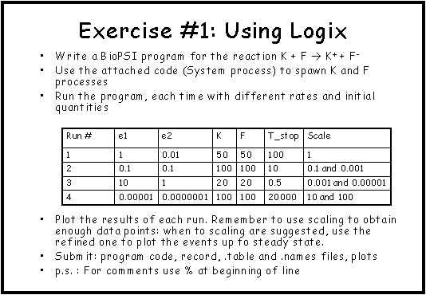

Attached code (kf_spawn.cp):
% This piece of code serves to spawn off N1 "K
processes" and N2 "F processes".
% Incorporate it into your program as one of the
processes
System(N1,N2)::= << CREATE_K(N1) |
CREATE_F(N2) .
CREATE_K(C)::= {C =< 0}
, true ;
{C >
0} , {C--} | K | self .
CREATE_F(C)::= {C =< 0}
, true ;
{C >
0} , {C--} | F | self
>> .
You should use the script psi2t
in order to convert the record file to a .table and .names files.
Sample of outputs:
|
Question 1 |
Question 2a |
Question 2b |
Question 3a |
Question 3b |
Question 4a |
Question 4b |
{kind=link}
{kind=link}
{kind=link}
{kind=link}
{kind=link}
{kind=link}
{kind=link}
Exercise 2: Chemical bonds (due by
May 13th)
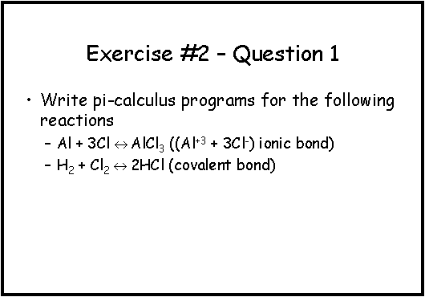
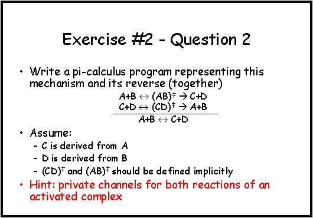
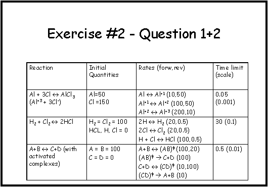
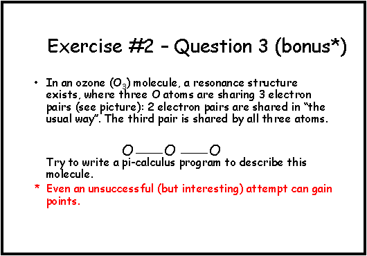
Exercise 3: Modular representation of
reactions (due by May 23th)
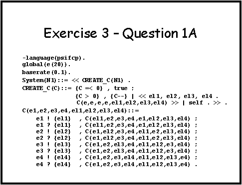
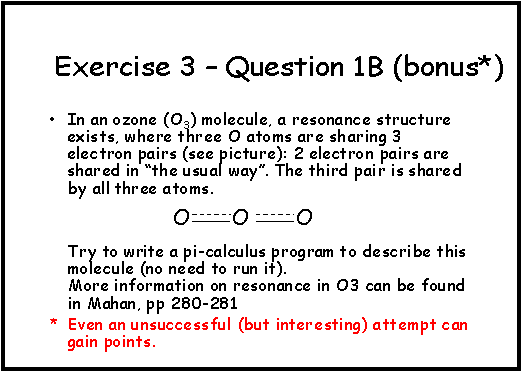
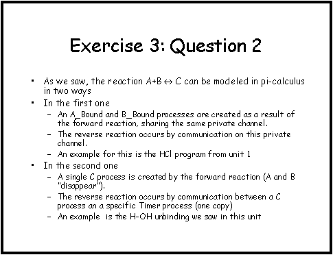
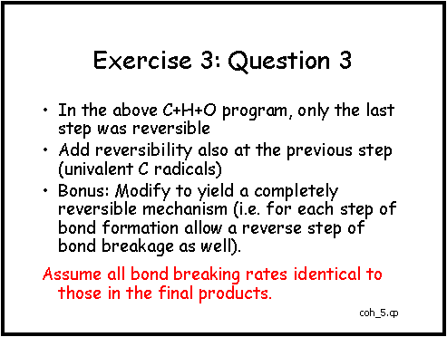
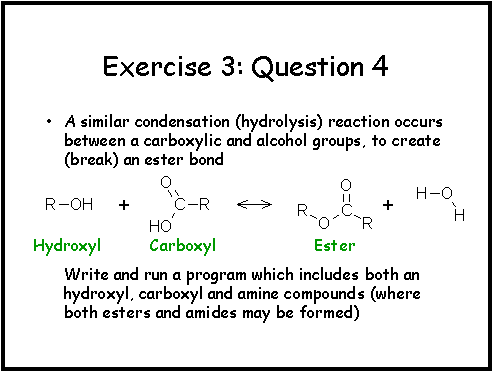
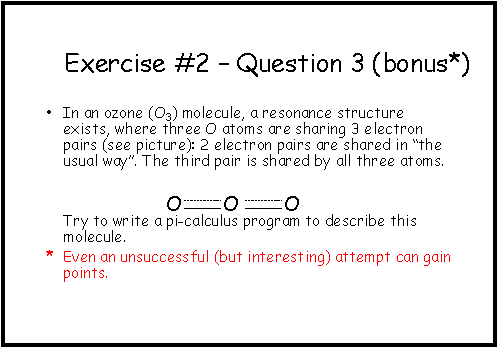
Exercise
4: Proteins (due by May 30th)
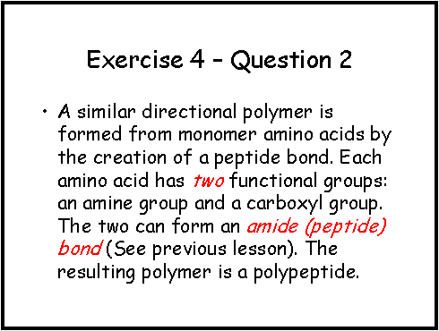
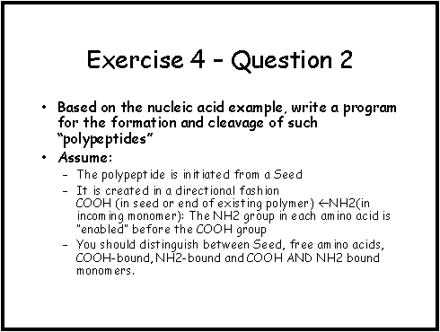
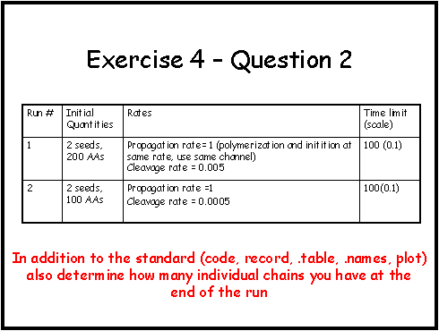
Exercise 5: Quantities (due by
June 6th)
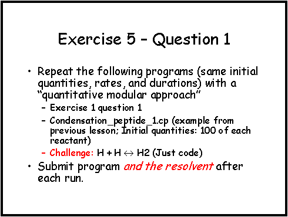
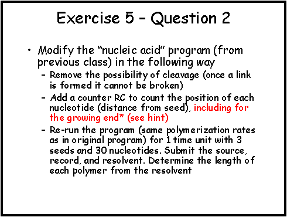
Exercise
6: Enzymes (due by June 20th)
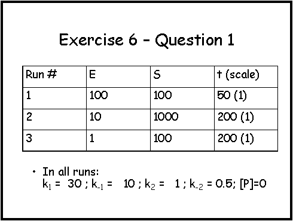
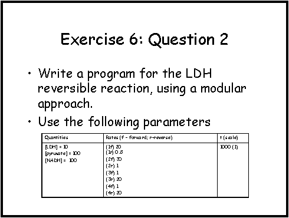
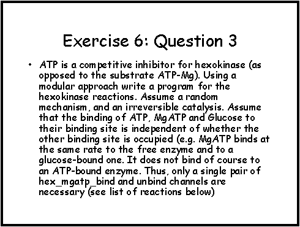
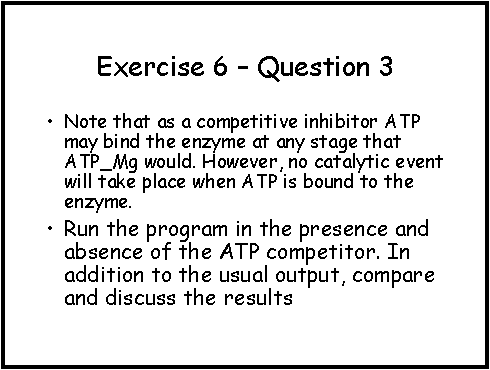
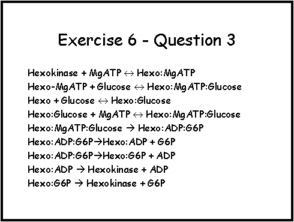
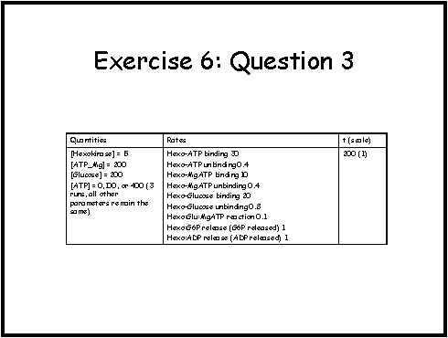
Exercise
7: Regulatory Circuits (due by July 4th)
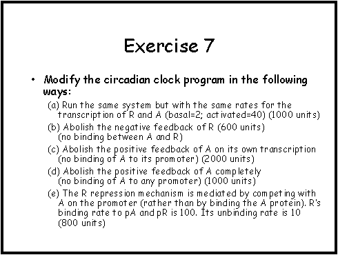
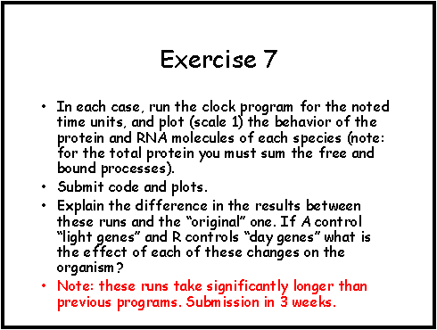
Administrative Stuff:
Requirements and Grading:
·
Exercises:
Weekly. Write and execute pi-calculus programs - 60%
-
The best six submission
of each student will be considered for the final grade.
-
The grade of
each exercise will mostly refer to correctness, though other aspects such as
clarity and submission will be considered.
·
Project: Model
and analyze by simulation a larger system (other formats or types of projects
can also be considered upon early approval) - 40%
o Projects should be conducted by
interdisciplinary groups of up to 3 students or non-interdisciplinary groups of
up to 2 students.
o A typical submission will include:
-
A short
presentation of the question that motivates the study.
-
A short
description of the model underlying the simulation.
-
The output/s
of the simulation presented in comprehendible form.
-
A short
account explaining the essence of the results and how they enlighten the
motivating question.
-
The ‘source’
of the simulation and instructions how to ’use’ it.
o To make sure the planned project meets the
course's requirements, please, be sure to get approval for the project in
advance from the course staff.
o The projects should be submitted by e-mail.
o Deadline for projects submission is August
31st.
Syllabus:
In this course we will learn how to model,
program, and simulate biochemical and molecular processes using computer
science tools developed originally for the specification of concurrent computer
processes. The course will include frontal lectures, programming/simulation
exercises, and a final multidisciplinary team project. Topics:
1. An introduction to modeling molecular systems as concurrent systems
2. Modeling and simulation of coupled chemical reactions: pi-calculus and stochastic pi-calculus, Gillespie's Monte-Carlo algorithm.
3. Biochemistry: modular models for enzymatic reactions, compartmentalization and transport. Metabolic pathways
4. Molecular machines: polymerization reactions, transcription and translation as stochastic processes
5.
Regulatory networks and signal transduction pathways:
molecular and modular approaches
Registration:
If you
are considering attending this course (even not for credits), please assist us
by sending e-mail to Barak Shenhav,
with the following details:
·
Last name
·
First Name
·
E-mail
·
Faculty and
department
·
M.Sc. / Ph.D.
/ other
·
Credit / Free
student
Thanks
for your collaboration.
Pre-requisites:
·
Some
programming background (e.g. 'Introduction to CS' or any undergraduate level
programming course).
·
An
introductory level course in molecular biology is recommended.
·
Attendance of
last year's course by Barkai and Alon is an asset but not required.
Useful
Stuff:
Links
· The BioPSI Project homepage.
Downloads
·
The BioPSI
manual - Appendices
Books
· Communication and mobile systems: The pi-calculus, Robin Milner, Cambridge University Press, 1999.
· Molecular Biology of the Cell (3rd edition), Alberts et al., Garland Publishing Inc., 1994.
· Essential Cell Biology, Alberts et al., Garland Publishing Inc., 1998.
· University Chemistry (4th edition), Mahan and Myers, Addison-Wesley, 1987 (chapters 2, 6 and 9).
· Chemistry, Change R., McGraw-Hill, 1991 (chapters 3.1, 9 and 13).
· Fundamentals of Biochemistry, Voet D, Voet J.G. and Pratt C. W, Wiley and Sons, 1999.
Papers
·
Gillespie D.T.
(1976) A general method for numerically simulating the stochastic time
evolution of coupled chemical reactions. Journal of Computational Physics 22:
403-434.
·
Gillespie D.
T. (1977) Exact stochastic simulation of coupled chemical reactions. Journal of
physical chemistry 81: 2340-2361.
Last updated on 5 July 2001